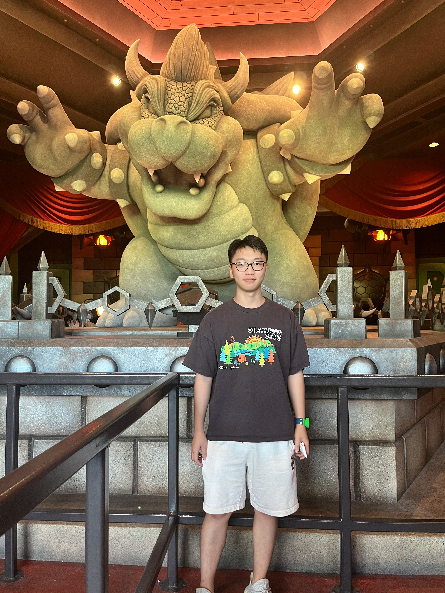

|
 |
Kangning CuiPh.D. candidateDepartment of Mathematics City University of Hong Kong 📧 : kangnicui2-c@my.cityu.edu.hk 📞 : +852-51622985 |
EDUCATION
[2017-2025]
City University of Hong Kong
Ph.D. in Mathematics, funded by Hong Kong Centre for Cerebro-cardiovascular Health Engineering
Bachelor's Degree in Computing Mathematics
POSITIONS HELD
[09/2022-present]
Society for Industrial and Applied Mathematics
Founding President of SIAM Student Chapter at City University of Hong Kong
[05/2020-present] Wake Forest University
Research scholar of Intelligent Remote Sensing in Conservation & Discovery Group
RESEARCH PUBLICATIONS
Journal Papers
- Fei Pan, Yutong Wu, Kangning Cui, Shuxun Chen, Yanfang Li, Yaofang Liu, Adnan Shakoor, Han Zhao, Beijia Lu, Shaohua Zhi, Raymond H. Chan, and Dong Sun, "Dual-View Selective Instance Segmentation Network for Unstained Live Adherent Cells in Differential Interference Contrast Images", in ArXiv, 2023.
- Sam L. Polk, Kangning Cui, Aland H. Y. Chan, David A. Coomes, Robert J. Plemmons, and James M. Murphy, "Unsupervised Diffusion and Volume Maximization-Based Clustering of Hyperspectral Images", in Remote Sens., MDPI, 2023.
- Seda Camalan, Kangning Cui, Victor P. Pauca,Sarra Alqahtani, Miles Silman, Raymond H. Chan, Robert J. Plemmons, Evan N. Dethier, Luis E. Fernandez, and David A. Lutz, "Change Detection of Amazonian Alluvial Gold Mining Using Deep Learning and Sentinel-2 Imagery", in Remote Sens., MDPI, 2022.
Proceedings Papers and Posters
- Wei Tang, Yinxiao Wang, Kangning Cui‡, and Raymond H. Chan, "A Global and Patch-wise Contrastive Loss for Accurate Automated Exudate Detection", in ArXiv, 2023.
- Seda Camalan, Kangning Cui, Victor P. Pauca, Sarra Alqahtani, Miles Silman, Raymond H. Chan, Robert J. Plemmons, Evan N. Dethier, Luis E. Fernandez, and David A. Lutz, "Detecting Change due to Alluvial Gold Mining in Peruvian Rainforest Using Recursive Convolutional Neural Networks and Contrastive Learning", in Fall Meeting, AGU, 2022.
- Kangning Cui†, Ruoning Li, Sam L. Polk, James M. Murphy, Robert J. Plemmons, and Raymond H. Chan, "Unsupervised Spatial-spectral Hyperspectral Image Reconstruction and Clustering with Diffusion Geometry", in Proc WHISPERS, IEEE, 2022.
- Kangning Cui†, Seda Camalan, Ruoning Li, Victor P. Pauca, Sarra Alqahtani, Robert J. Plemmons, Miles Silman, Evan N. Dethier, David A. Lutz, and Raymond H. Chan, "Semi-supervised Change Detection of Small Water Bodies Using RGB and Multispectral Images in Peruvian Rainforests", in Proc WHISPERS, IEEE, 2022.
- Sam L. Polk, Kangning Cui, Robert J. Plemmons, and James M. Murphy, "Active Diffusion and VCA-Assisted Image Segmentation of Hyperspectral Images", in Proc IGARSS, IEEE, 2022.
- Sam L. Polk, Aland H. Y. Chan, Kangning Cui, Robert J. Plemmons, David A. Coomes, and James M. Murphy, "Unsupervised detection of ash dieback disease (Hymenoscyphus fraxineus) using diffusion-based hyperspectral image clustering", in Proc IGARSS, IEEE, 2022.
- Ruoning Li, Kangning Cui, Raymond H. Chan, and Robert J. Plemmons, "Classification of Hyperspectral Images Using SVM with Shape-adaptive Reconstruction and Smoothed Total Variation", in Proc IGARSS, IEEE, 2022.
- Kangning Cui† and Robert J. Plemmons, "Unsupervised Classification of AVIRIS-NG Hyperspectral Images", in Proc WHISPERS, IEEE, 2021.
† indicates the first authorship, ‡ indicates the correspondence.
ACADEMIC SERVICE
Reviewer
- Remote Sensing, MDPI.
- The International Geoscience and Remote Sensing Symposium (IGARSS), IEEE, Pasadena California 2023.
TEACHING EXPERIENCE
- MA1006 Tutorials, City University of Hong Kong, Semesters 2022/23 A & B. Course Link
- MA2158 Tutorials -- Linear Algebra and Calculus, City University of Hong Kong, Semester A 2023/24. Course Link
- MA2177 Tutorials -- Engineering Math & Stats, City University of Hong Kong, Semester A 2023/24. Course Link
HONORS AND AWARDS
- Nominated as SIAM Student Chapter Certificate of Recognition, 2022/23.
- Institutional Research Tuition Scholarship from 2022 to 2023.
- Postgraduate Studentship & Institutional Research Tuition Grant from 2021 to 2025.
- CityU Scholarship 2020/21.
- Dean's List, most semesters from 2017 to 2021.
- Full Tuition Scholarship from 2017 to 2021.
WORK EXPERIENCE
- Served as Teaching Assistant, Research Assistant, and Course Instructor at Neoscholar on several research programs with professors from G5 and Ivy League universities in the US and the UK.
ADDITIONAL EXPERIENCE
- Exchanged to Middlesex University, London, England, summer 2018.
- Visited Yau Mathematical Sciences Center, Tsinghua University, Beijing, China, summer 2018 and summer 2019.
- Exchanged to Peking University, Beijing, China, summer 2019.
- Exchanged to Delft University of Technology, spring term 2020.
- Enrolled in Rome-Moscow School, remote mode, summer 2020.
- Researched at Wake Forest University, Winston-Salem, North Carolina, United States, summer 2023.